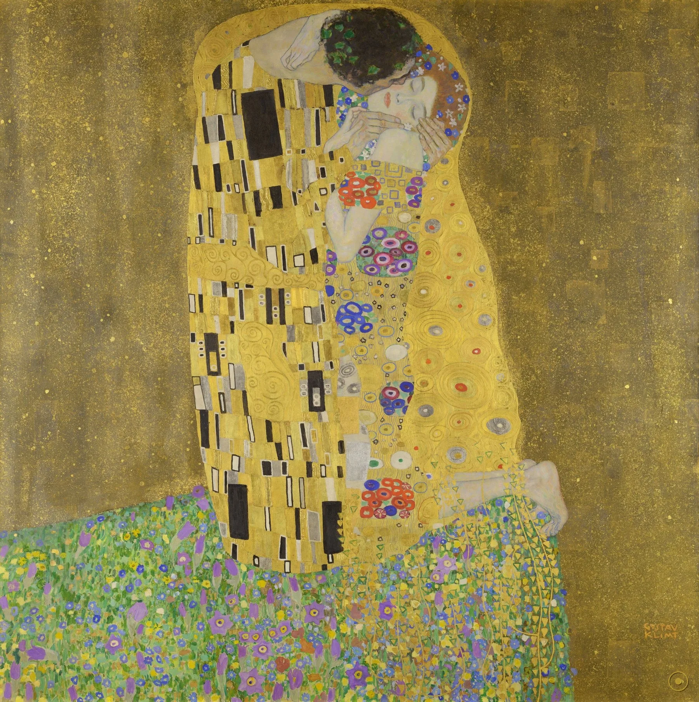
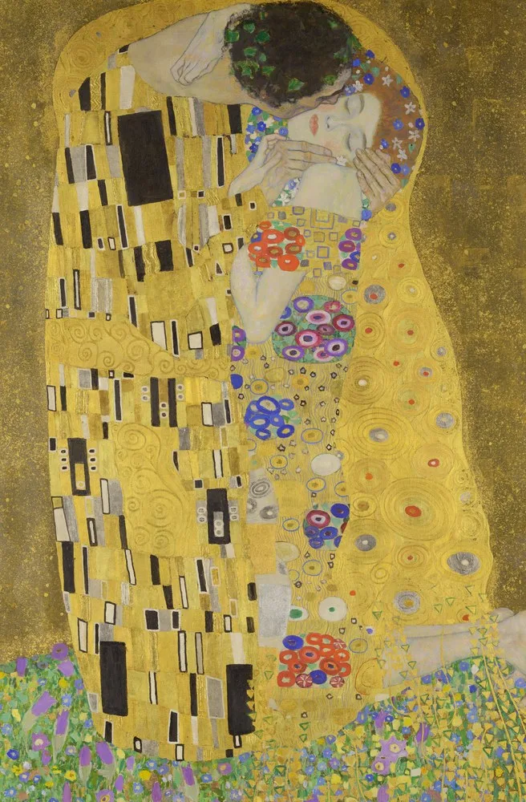
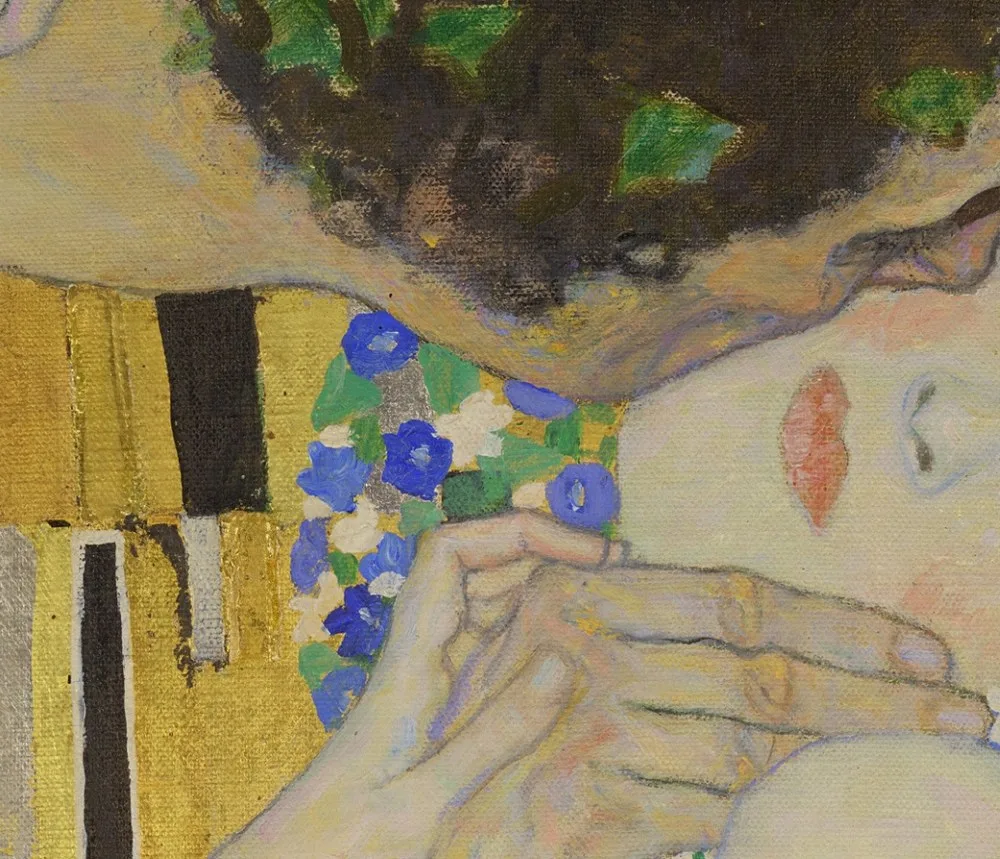
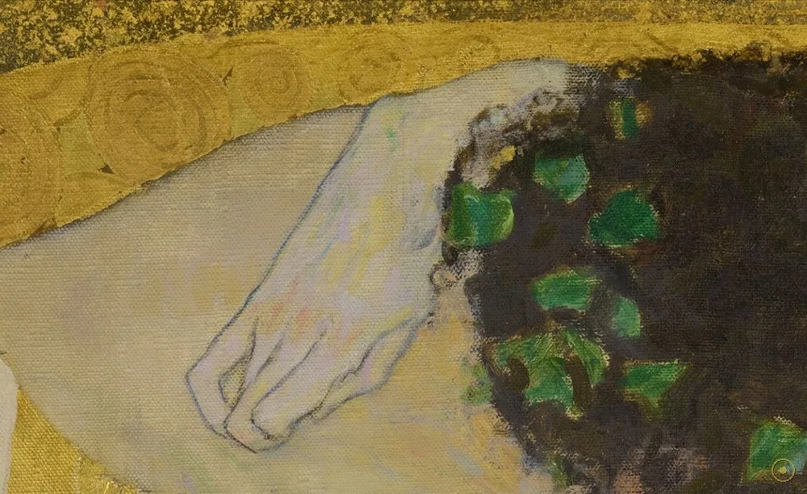
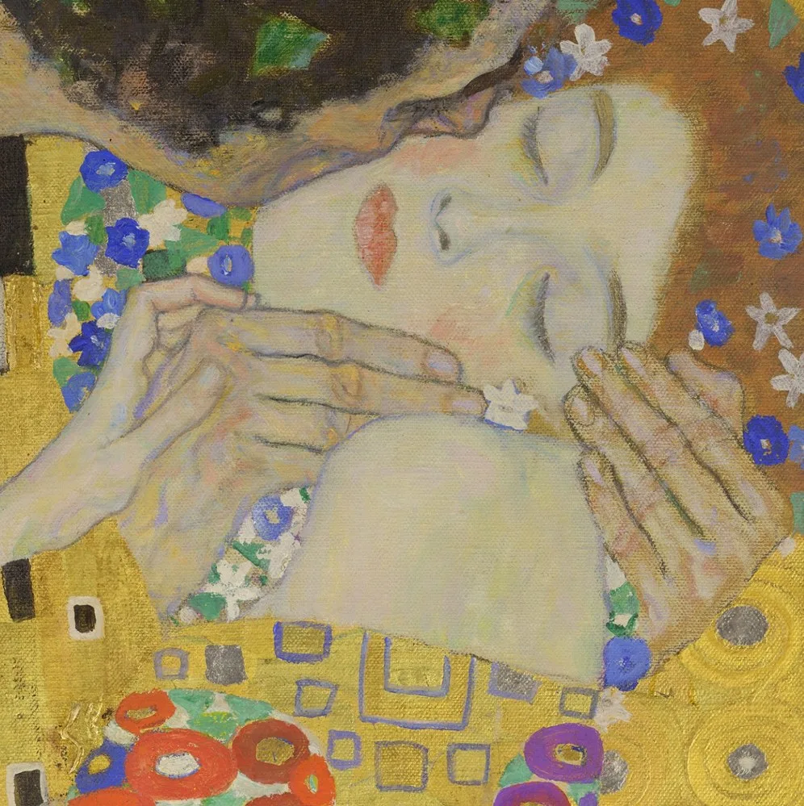
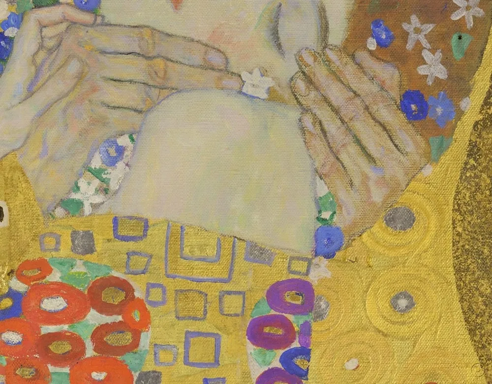
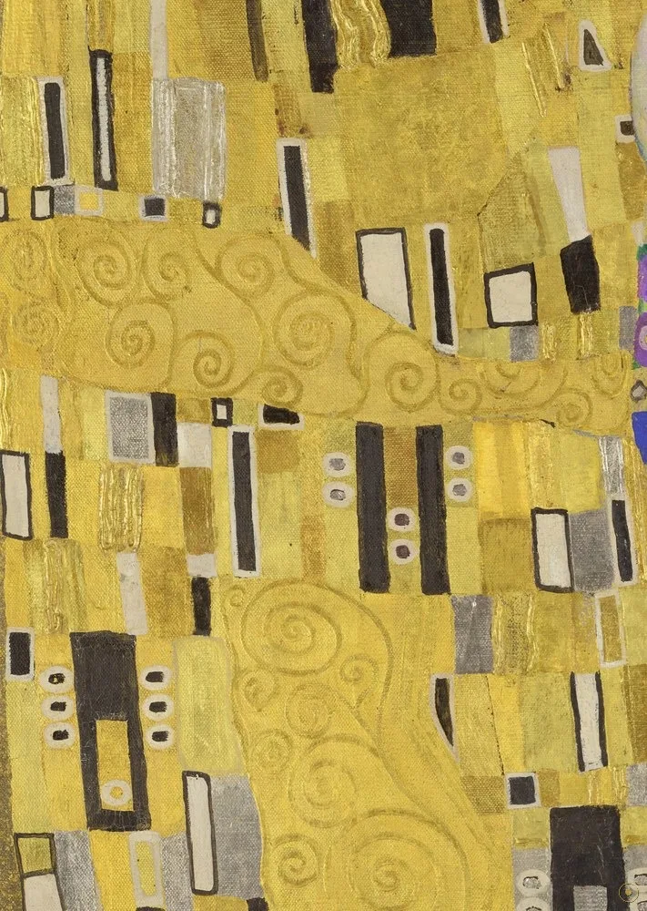
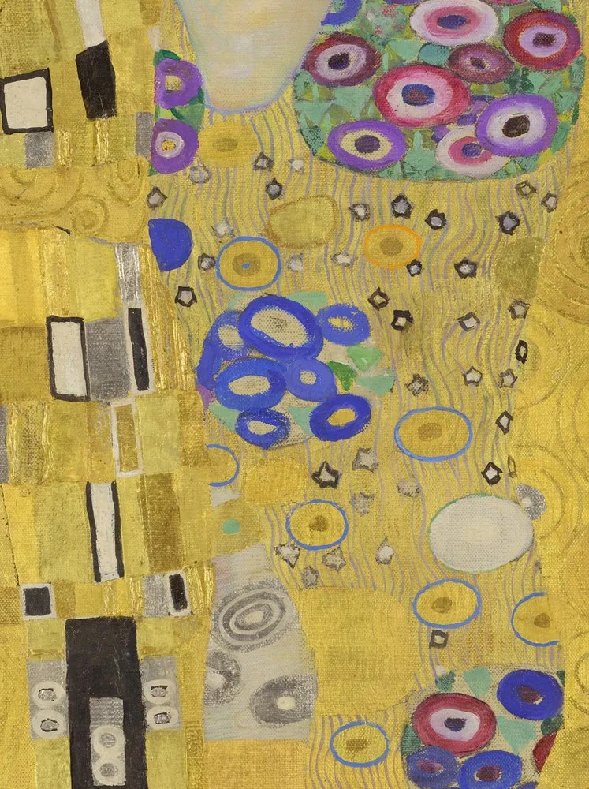
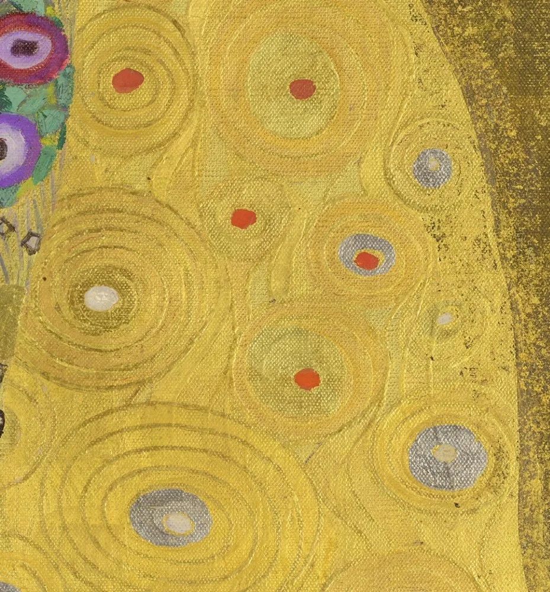
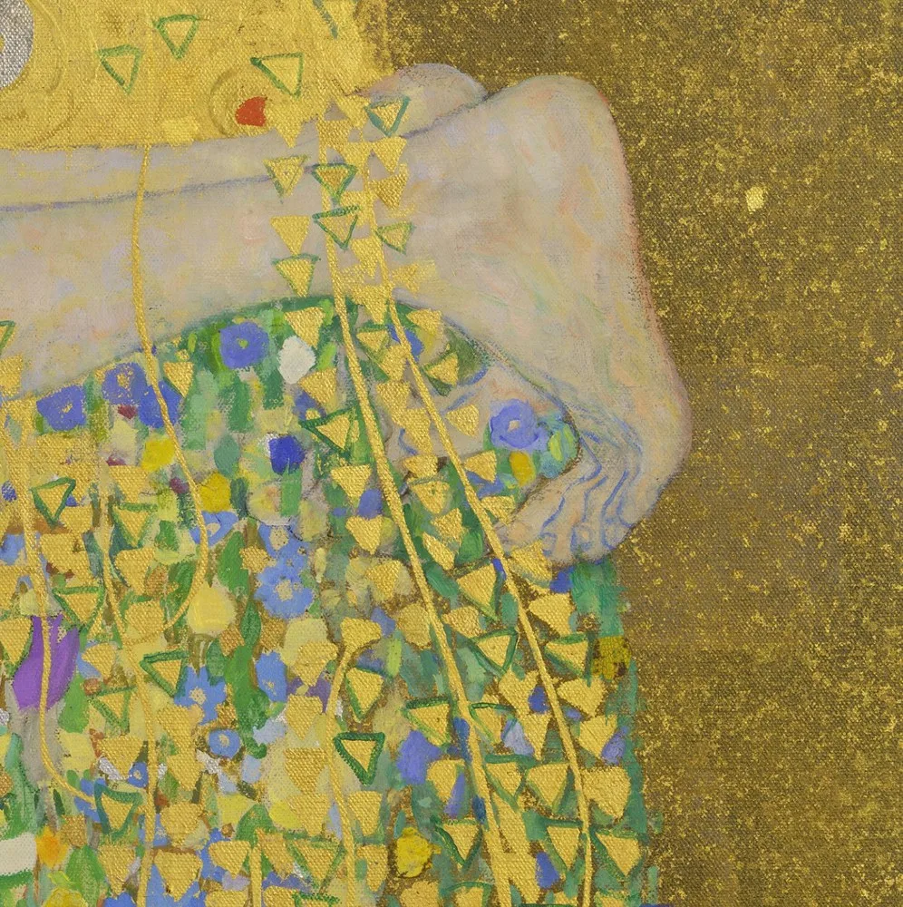

「谁想了解我，就该仔细地看我的画。」——古斯塔夫·克里姆特（据德译转译）
这句话是克里姆特留下的、少有的关于自己的话。他不写理论、不留日记、几乎不接受解释自己的访谈；想要认识他，只能像他说的那样，去看画。而在他所有的画里，最不需要解释、又最说不清楚的一幅，就是眼前这幅《吻》：1907 至 1908 年，他用油彩在画布上贴了真金箔，画下一对相拥的恋人，尺寸恰好是 180 厘米见方——一个罕见的正方形巨幅。
特别之处在于，它既简单又暧昧。简单到一句话就能说完：一对男女站在开满花的草地上，被一件金色的袍子包起来，男人俯身吻女人的脸颊。暧昧则在于它什么都不交代——男人的脸被完全藏起，两人的身体在画里合成一个形状，金底抹掉了空间与纵深，你既分不清他们是跪着还是站着，也说不清这是情欲的吻还是神圣的赐福。金箔把一幅世俗的双人像，推到了圣像的高度。
所以这一页不打算替你回答‘这是什么’。它会带你从左上角的金底出发，经过被藏起的脸、托住脸颊的手、方形与圆形两套纹样，一直走到右下角的签名——把这片看似只有金色的画，拆成十一件可以一件件看清的事。结尾处，还可以点亮一首与它同城同代的音乐。
—— 古斯塔夫·克里姆特 · 据其留存的随笔札记（据德译转译）
在本页左下角，可以点亮一首与这幅画同代同城的音乐。
从左上角的金底，到右下角的签名：把一幅‘看起来只有一片金’的画，拆成十一件可验证的事。

点击画面中的 ✦ 光点 查看画面细节 · 图片来源：Wikimedia Commons（公有领域）
它诞生在金色时期的高峰，第一次亮相时却还叫另一个名字。
约 1907–1908 · 维也纳
1907 至 1908 年，克里姆特正处在所谓的『金色时期』高峰。前几年游历拉文纳时，拜占庭马赛克的金底彻底改变了他的画法：真金箔上了画布，装饰母题覆盖全身。就在同一时期，他画了《阿黛尔·布洛赫-鲍尔肖像 I》《吻》等一批金箔作品，共用着同一套金色语汇。至于《吻》究竟为谁而作、有没有委托人，至今没有任何同时代文献能够回答。
➤1908 · 维也纳艺术展
1908 年，维也纳艺术展（Kunstschau）开幕，克里姆特是这场展览的核心人物。这幅画在图录里的名称是《恋人》(Liebespaar)——不是《吻》。更罕见的是，展览期间它就被奥地利国家购藏，转入今天的奥地利美术馆（美景宫）。也就是说，这幅后来定义了一个时代的画，在诞生的同一年就进了公共收藏，几乎没有经历过『无人问津』的阶段。
➤1908 → 今天 · 美景宫
进入美景宫后，《吻》逐渐成为奥地利最著名的画作之一。20 世纪后期以来，它被无数次复制，印上明信片、海报、马克杯与纪念品，『金色』几乎成了克里姆特的商标。与此同时，艺术史对它的评价也几经翻转：曾被嫌『装饰、甜腻』的风格，后来被重新评价为现代装饰艺术与设计的重要源头。一幅画的意义，往往不是画完那一刻就定下的。

真事一 · 金箔是真的黄金。技术检测确认，《吻》使用油彩，并贴有真正的金箔，另含银与铂金成分；画布尺寸为 180 × 180 厘米，是一个罕见的正方形巨幅。金不是『金色颜料』，而是把金属锻成薄片直接贴上画面——它会发光，也会随时间氧化、斑驳，因此每张照片里的《吻》都略有不同。
真事二 · 它最早的名字是《恋人》。据 1908 年维也纳艺术展的图录记载，此画参展时的题名是 Liebespaar（恋人），而非《吻》；同年在展览期间被奥地利国家购入，后入藏美景宫。《吻》这个我们今天熟悉的名字，是后来才固定下来的。
真事三 · 它是一组『金色作品』之一。文献与作品序列都显示，《吻》与《阿黛尔·布洛赫-鲍尔肖像 I》(1907) 以及同期若干金箔画作共享同一批装饰母题与工艺，是克里姆特『金色时期』集中产出的一部分——它不是一座孤立的杰作，而是一整个创作阶段的高点。
※ 画中人物身份（是否为克里姆特与艾米莉·弗勒格）系后世主流假说，无同时代文献直接证实；克里姆特引文据德译转译，措辞或因译本而异。
把画面放大：方与圆、金与彩、肉身与装饰，各说各话。

唇落在脸颊，未被时间取走的一瞬——既像亲吻，也像祝祷。

男人的脸埋进她的脸颊侧后，藤冠下没有五官：吻失去了施动者。

闭眼、微启的唇、发间的蓝花——全画唯一敞开的一扇情绪之窗。

指节与指甲清晰可辨；写实留给肌肤，抽象让给衣袍。

砌砖般排列的黑白方块，克里姆特语汇里『男性』的那一半。

蓝紫红的小圆点铺满裙面，唯一向外扩张的形状——『女性』的一半。

同心圆荡开的金色『眼睛』，与《阿黛尔》肖像共用的母题。

悬在草与袍的交接处：跪着还是站着？画里不给你答案。
金箔与拜占庭马赛克是理解《吻》的钥匙。1903 年克里姆特游历意大利拉文纳，见到圣维塔莱教堂保存的六世纪马赛克——金底上直立的人物、闪光的镶嵌。回到维也纳后，他开始用真金作画，把宗教艺术里的『圣光』用到世俗题材上：《吻》的金底，本质上是把一座教堂的光，搬进了一对恋人的房间。
《吻》诞生于 1907–1908 的维也纳——弗洛伊德正在写他的释梦，马勒在写他的交响曲，勋伯格刚刚结束《升华之夜》的调性探索；城市里同时涌动着欲望、想象与形式革新。克里姆特是维也纳分离派（Secession）的旗手，他们喊出『给时代以艺术，给艺术以自由』。把金箔与情欲、装饰与身体放进同一张画，本身就是那个时代的精神样本。
《吻》长期面对一种指责：太装饰、太漂亮、太『像设计』。这种评价其实暴露了现代艺术史的一条偏见——它习惯把装饰贬为次等。《吻》恰恰把装饰抬成了主角：图案不再是陪衬，而是构图、是象征、是内容。今天再看，那种把几何与花纹、平面与金光组织进同一画面的能力，正是现代视觉设计的源头之一。
《吻》的影响早已越出美术馆：它的金色、方与圆的对比、螺旋与花点，成为无数海报、时尚与包装设计引用的语汇。21 世纪初围绕克里姆特另一幅金箔画《阿黛尔·布洛赫-鲍尔肖像 I》的归还官司，更把他推上全球头条。『金色』于是不只是一种颜色，而成为一种可被反复调用的文化品牌——这也让原作的分量更加凸显：所有衍生，都指向这 180 厘米见方的一块布。
于维也纳『金色时期』绘成，油彩与真金箔，180 × 180 厘米正方形画布。
克里姆特游历拉文纳，拜占庭马赛克的金底影响了他此后的金色时期。
以《恋人》(Liebespaar) 之名在维也纳艺术展（Kunstschau）首次展出，同年被奥地利国家购藏。
藏于维也纳美景宫（奥地利美术馆），成为奥地利最著名的画作之一。
全球被复制最多的艺术品之一；『金色』成了一种被反复引用的视觉品牌。